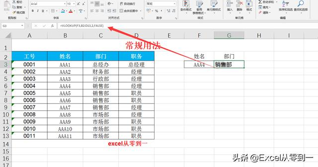
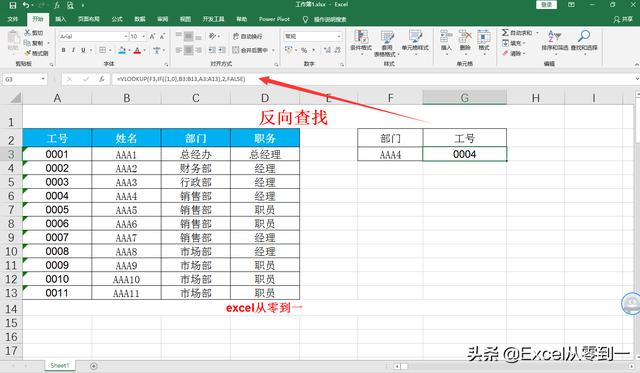
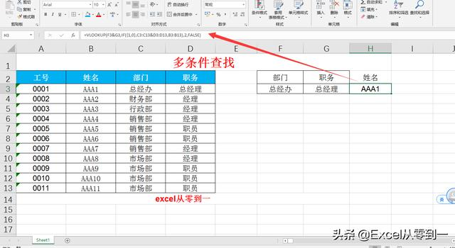
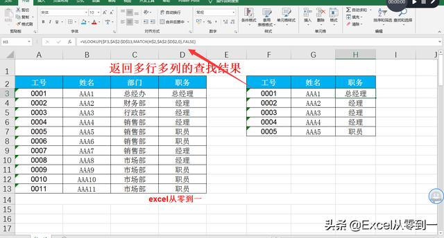
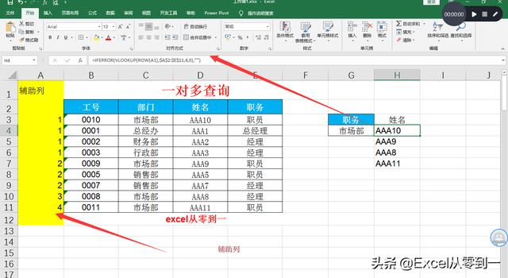
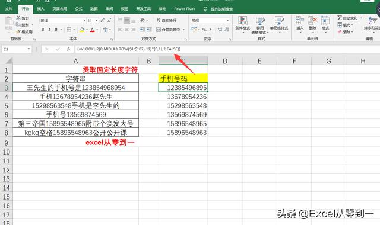
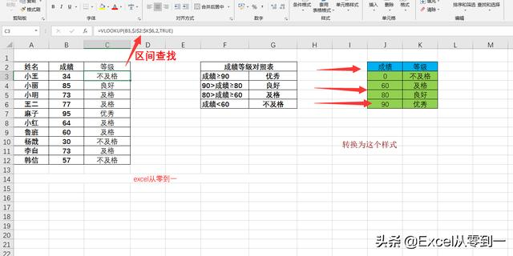
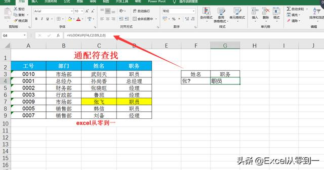

8种vlookup函数的使用方法，知道5种以上你就是大神
原创 Excel从零到一 2019-03-06 21:08:42
Hello,大家好，今天跟大家整理了8种vlookup函数的使用方法，如果知道5种以上对于vlookup这个函数来说你就已经是大神了，话不多说，我们直接开始吧
一、 常规用法
公式：=VLOOKUP(F3,B2:D13,2,FALSE)

二、 反向查找
公式：=VLOOKUP(F3,IF({1,0},B3:B13,A3:A13),2,FALSE)
所谓反向查找就是用右边的数据去查找左边的数据，
在这里我们利用IF函数构建了一个二维数组，然后在数组中进行查询

三、 多条件查找
公式：=VLOOKUP(F3&G3,IF({1,0},C3:C13&D3:D13,B3:B13),2,FALSE)
使用连接符将部门与职务连接在一起作为查找条件，然后我们利用if函数构建二维数组，并提取数据

四、 返回多行多列的查找结果
公式：=VLOOKUP($F3,$A$2:$D$13,MATCH(H$2,$A$2:$D$2,0),FALSE)
在这里我们在vlookup中嵌套一个match函数来获取表头在数据表中的列号

五、 一对多查询
公式：=IFERROR(VLOOKUP(ROW(A1),$A$2:$E$11,4,0),"")
在这我们需要创建辅助列，辅助列公式：=(C3=$G$4)+A2
如图所示让只有当结果等于市场部的时候结果才会增加1.
Vlookup的第一参数必须是ROW(A1)，因为我们是用1开始查找数据的，第二参数必须是以辅助列为最左边的列，然后利用当用vlookup查找重复值的时候，vlookup仅会返回第一个查找到的结果

六、提取固定长度的数字
公式：=VLOOKUP(0,MID(A3,ROW($1:$102),11)*{0,1},2,FALSE)
使用这个公式有一个限制条件，就是我们必须知道想提取字符串的长度，比如这里手机号码是11位，
在这里我们利用mid函数提取一个长度为11位的字符串，然后在乘以数组0和1，只有，只有当提取到正确的手机号码的时候才会得到一个0和手机号码的数组，其他的均为错误值

七、 区间查找
公式：=VLOOKUP(B3,$J$2:$K$6,2,TRUE)
这里我们使用vlookup函数的近似匹配来代替if函数实现判断成绩的功能
首选我们需要将成绩对照表转换为最右侧的样式，
然后我们利用vlookup使用近似匹配的时候，函数如果找不到精确匹配的值，就会返回小于查找值的最大值这一特性实现判定成绩的功能

八、 通配符查找
公式：=VLOOKUP(F4,C2:D9,2,0)
这个跟常规用法是一样的，只不过是利用通配符来进行查找，我们经常利用这一特性，通过简称来查找全称
在excel中
？代表一个字符
*代表多个字符

这些vlookup函数的技巧你都知道几个呢